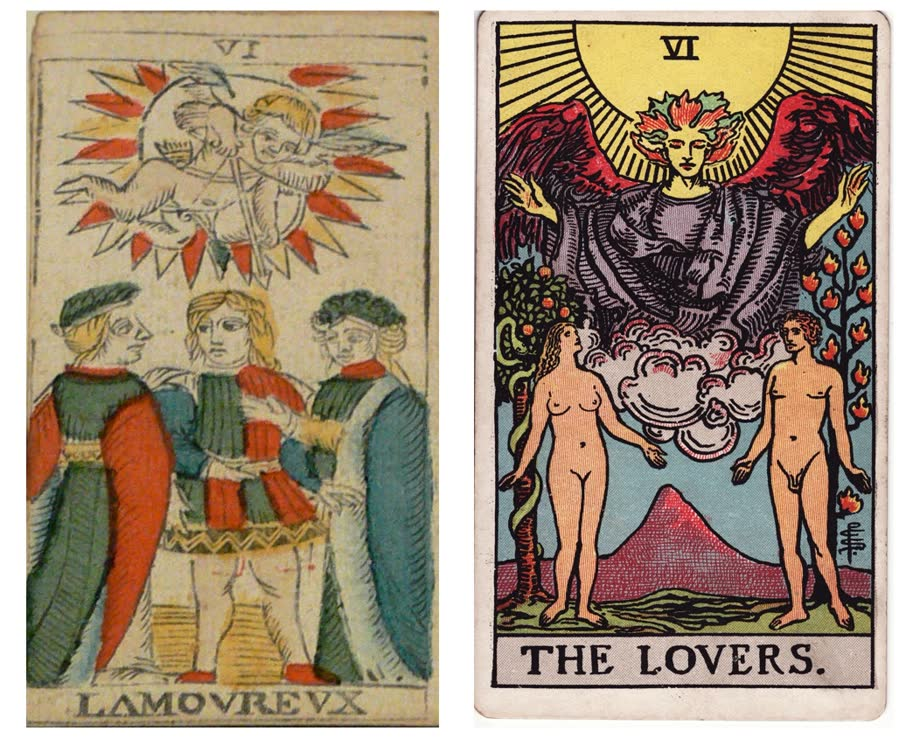

|
“Will he choose me?”
There’s a tarot card that has been asking that for a very long time.
Card number six in the tarot is The Lovers. But the card didn’t always look the way it does now.
Here are two versions of the same card.

Then: L’Amoureux, 1751 (Museum Humpis-Quartier, Ravensburg)
Now: The Lovers, Pamela Colman Smith, 1909 · both public domain
The one on the left is from 1751. It’s the old French style of deck, the kind people now call the Tarot de Marseille.
The one on the right was drawn in 1909 by an artist named Pamela Colman Smith, for a deck planned by A. E. Waite. Today it’s one of the best-known decks in the world.
Look at what changed.
Then: its name was “L’Amoureux.” The Lover. One. Now: “The Lovers.” Two.
Then: a young man stands in the middle, someone on each side. One has a hand on his shoulder. Now: one man, one woman. Nobody in the middle.
Then: Cupid above them, aiming his arrow. Now: a great angel, arms open over them both. Poor Cupid lost his job.
Then: many people read it as a choice. Which one will he pick? Now: look at their eyes. He looks at her. She looks up, past him.
Waite wrote one line about this card that I love:
“The old meanings fall to pieces of necessity with the old pictures.”
In plain words: change the picture, and the old meaning falls apart.
Here’s what I take from it.
A lot of us still live in the old card. Standing there, a hand on his shoulder. Waiting for him to choose.
The new card doesn’t wait. She isn’t watching him for an answer. She’s looking up.
So the new card asks a harder question:
Where am I looking?
At him? At the phone? Back at someone from before? Or at nobody, for a long time now?
I’ll be honest with you. I love these old cards. But a card can show you where the eyes go. It can’t tell you why.
Why we keep watching the one who won’t look back. Or why some of us stopped looking at all.
That part takes a conversation.
So tell me where you’ve been looking. At him, past him, back at someone, or nowhere for a while. Any answer is a fine start.
Evelyn, I’d like to talk about where I’ve been looking →
I’ll be honest about what I see. And gentle with it.
New to The Seer Within? Your first 3 minutes are my treat.
That old card has been waiting on him since 1751. You don’t have to wait on anyone to ask your own question.
Tell Evelyn where I’ve been looking →
— Evelyn
P.S. Look at the new card one more time. He’s looking right at her, and she hasn’t noticed. Is anyone looking at you that you haven’t noticed? Start here.
|